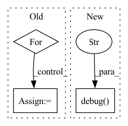

Pattern ID :14390

Before Change
res.raise_for_status()
res_json = res.json()
result = {}
for entry in res_json["results"]["bindings"]:
wikidata_id = nested_get(entry, "item", "value", default="")
assert isinstance(wikidata_id, str) // for mypy
wikidata_id = wikidata_id.rsplit("/", maxsplit=1)[-1]
label = nested_get(entry, "itemLabel", "value", default="")
assert isinstance(label, str) // for mypy
description = nested_get(entry, "itemDescription", "value", default="")
After Change
)
res.raise_for_status()
bindings = res.json()["results"]["bindings"]
logger.debug(f"Retrieved {len(bindings)} bindings")
return bindings
@classmethod
def query_text(
In pattern: SUPERPATTERN
Frequency: 3
Non-data size: 3
Instances
Fragment ID: 47450037
Project Name: pykeen/pykeen
Commit Name: 072ac7c66f5a38a7b816c41e5b1f5e4af6132086
Time: 2022-06-18
Author: berrendorf@dbs.ifi.lmu.de
File Name: src/pykeen/nn/utils.py
M Class Name: WikidataCache
N Class Name: WikidataCache
M Method Name: query(4)
N Method Name: query(4)
M Parent Class:
N Parent Class:
M File Name: src/pykeen/nn/utils.py
N File Name: src/pykeen/nn/utils.py
M Start Line: 201
M End Line: 255
N Start Line: 223
N End Line: 263
'>
Before Change
res.raise_for_status()
res_json = res.json()
result = {}
for entry in res_json["results"]["bindings"]:
wikidata_id = nested_get(entry, "item", "value", default="")
assert isinstance(wikidata_id, str) // for mypy
wikidata_id = wikidata_id.rsplit("/", maxsplit=1)[-1]
label = nested_get(entry, "itemLabel", "value", default="")
assert isinstance(label, str) // for mypy
description = nested_get(entry, "itemDescription", "value", default="")
assert isinstance(description, str) // for mypy
result[wikidata_id] = dict(label=label, description=description)
return result
def _load(self, wikidata_id: str, component: str) -> Optional[str]:
After Change
)
res.raise_for_status()
bindings = res.json()["results"]["bindings"]
logger.debug(f"Retrieved {len(bindings)} bindings")
return bindings
@classmethod
def query_text(
'>
Fragment ID: 47450038
Project Name: pykeen/pykeen
Commit Name: 072ac7c66f5a38a7b816c41e5b1f5e4af6132086
Time: 2022-06-18
Author: berrendorf@dbs.ifi.lmu.de
File Name: src/pykeen/nn/utils.py
M Class Name: WikidataCache
N Class Name: WikidataCache
M Method Name: query(4)
N Method Name: query(4)
M Parent Class:
N Parent Class:
M File Name: src/pykeen/nn/utils.py
N File Name: src/pykeen/nn/utils.py
M Start Line: 201
M End Line: 255
N Start Line: 223
N End Line: 263
'>
Before Change
combined_ops_map = {**functional_with_kwargs, **functional_with_special_handling,
**functional_with_args_kwargs}
for functional_name in combined_ops_map:
// \b boundary character to find the exact match from the functional_to_module lookup
pattern = r"\b" + functional_name + r"\b"
if search(pattern, str(node.target)) or search(pattern, str(node)):
return functional_name
After Change
if string in combined_lookup.keys():
return string
logger.debug("Couldn"t find functional: %s in the lookup. If functional op isn"t math invariant,"
" add an entry in the lookup.", node_name)
return None
def _create_module_for_functional_node(node: torch.fx.node, functional_name: str) -> torch.nn.Module:
'>
Fragment ID: 47450044
Project Name: quic/aimet
Commit Name: 524e196b597fb493325fc25fa1d86cd60cb0b08c
Time: 2023-01-11
Author: quic_hitameht@quicinc.com
File Name: TrainingExtensions/torch/src/python/aimet_torch/model_preparer.py
M Class Name: AnonimousClass
N Class Name: AnonimousClass
M Method Name: _find_functional_name_for_node(1)
N Method Name: _find_functional_name_for_node(1)
M Parent Class:
N Parent Class:
M File Name: TrainingExtensions/torch/src/python/aimet_torch/model_preparer.py
N File Name: TrainingExtensions/torch/src/python/aimet_torch/model_preparer.py
M Start Line: 427
M End Line: 435
N Start Line: 427
N End Line: 438
'>
Before Change
loss = loss_fn(output, target)
batch_size = data.shape[0]
total_loss += loss.item() * batch_size
for i, metric in enumerate(metric_fns):
total_metrics[i] += metric(output, target) * batch_size
if __name__ == "__main__":
After Change
df = pd.DataFrame({"image_id": image_id, "label": label})
out_csv = os.path.join(args.out_dir, "test_pred.csv")
df.to_csv(out_csv, index=False)
logger.debug("done.")
if __name__ == "__main__":
args = argparse.ArgumentParser(description="testing")
'>
Fragment ID: 47450042
Project Name: deeperlearner/pytorch-template
Commit Name: 49ac2e7c4e18177db31ae741c8dfd7cdbf5ca0f0
Time: 2020-11-11
Author: b04202035@g.ntu.edu.tw
File Name: test.py
M Class Name: AnonimousClass
N Class Name: AnonimousClass
M Method Name: main(1)
N Method Name: main(1)
M Parent Class:
N Parent Class:
M File Name: test.py
N File Name: test.py
M Start Line: 15
M End Line: 62
N Start Line: 20
N End Line: 76